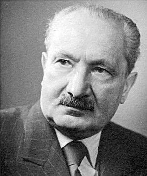

Heidegger

Martin Heidegger è stato un filosofo tedesco, considerato il maggior esponente dell'esistenzialismo ontologico e fenomenologico (anche se lui stesso ha rigettato quest'ultima etichetta).
Pensiero
«Il filosofo deve restare solitario, perché lo è nella sua essenza. La sua solitudine non può essere discussa. L'isolamento non è qualcosa che si può volere. Proprio per questo egli deve esserci sempre nei momenti decisivi e non può farsi da parte. Egli non fraintenderà la solitudine interpretandola nel senso esteriore di un ritirarsi e di un lasciar-correre le cose.» (M. Heidegger, L'essenza della verità. Sul mito della caverna e sul «Teeteto» di Platone [1931-32], a cura di H. Mörchen [1988], edizione italiana a cura di F. Volpi, Adelphi, Milano 2009³, p. 112.) L'intento di Heidegger è quindi quello di costruire un'ontologia fondamentale che, sulle orme dell'ultimo Husserl, ricerchi la natura costitutiva degli oggetti del mondo a partire dal soggetto e dalla coscienza trascendentale che in qualche modo li rende possibili. Husserl aveva bensì evidenziato l'esigenza di indagare la soggettività in maniera non astratta e generica, ma in relazione agli oggetti del mondo e della storia: in tal senso egli aveva dato avvio all'esplorazione delle cosiddette "ontologie regionali", ossia di quelle scienzerivolte allo studio di particolari aspetti o regioni della realtà, come la logica o la matematica, da un punto di vista a priori, cioè sulla base delle loro essenze ideali. Il tentativo di Husserl di dare concretezza al soggetto trascendentale, però, secondo Heidegger non è bastato, poiché occorre tener conto anche della sua finitezza e della drammaticità della sua esistenza storica. Nel costruire la sua ontologia, ossia la scienza che descrive l'essere e le sue strutture fondamentali, Heidegger ritiene si debba partire dal soggetto che pone la domanda su che cosa sia l'essere, cioè l'uomo. L'uomo ha avuto un rapporto problematico con la definizione di essere, finendo per concepirlo come "oggettività", come semplice presenza, come la qualità per cui diversi oggetti o entità sono posti davanti a me (ob-jecta in latino). Questa definizione non tiene conto dell'uomo stesso, al quale gli oggetti sono bensì presenti, ma che non è una semplice presenza nel mondo, bensì un prendersi «cura» di esso, un agire rivolto al futuro continuamente operando in vista di uno scopo. Recependo infatti l'insegnamento fenomenologico, secondo Heidegger l'esistenza umana significa essenzialmente trascendenza, protesa però allo stesso tempo verso il mondo, al fine di modellarlo e progettarlo. L'uomo quindi non è presenza ma progetto, o alternativamente esser-ci (Dasein), essere nel mondo, in quanto nodo inestricabile di situazioni nel quale si trova calato.
L'uomo come progetto
Se si intende l'essere come progettare, si modifica anche la concezione dell'essere degli oggetti, o degli «enti intramondani»: questi non sono più presenze che sussistono in maniera indipendente da noi, come induce a credere il metodo scientifico, ma vengono visti come strumenti in funzione del nostro progetto. Un progetto che consiste appunto nel «preoccuparsi» di tali strumenti, averne cura nel senso latino del termine, un compito che l'uomo, per sua natura, ha nei confronti di essi. Del resto, anche la presunta oggettività con cui la tecnica dice di guardare loro, è in realtà in funzione della loro strumentalità o utilizzabilità. Poiché ogni strumento coopera con altri strumenti in vista di un orizzonte più vasto che è il fine ultimo a cui devono servire, essi vanno compresi entro una totalità, alla luce del mondo complessivo creato e unificato dall'uomo che persegue i suoi progetti. Ciò significa che l'essere di questi enti intramondani è dato dal fatto che c'è l'uomo: è l'uomo che li fa venire all'essere. Tale risultato, che per certi aspetti avvicina Heidegger all'idealismo trascendentale e alla coscienza fenomenologica, per i quali appunto era il soggetto a creare l'oggetto, viene a questo punto ricondotto da Heidegger all'esigenza sua propria di connetterlo alla concretezza dell'esistenza. L'esserci, infatti, che progettando il mondo lo fa venire all'essere in quanto coscienza trascendentale, si trova ad essere a sua volta "progettato": egli stesso è progetto gettato (Geworfenheit); nasce e muore senza averlo deciso, e si ritrova limitato dalla sua finitezza. Il Dasein, pertanto, da un lato denota libertà (in quanto trascendenza), dall'altro però questa stessa libertà comporta di accettare le condizioni in cui essa si va ad esplicare (immanenza).
Essere per la morte
Su questa auto-limitazione della libertà si inserisce la riflessione di Heidegger sulla morte, che non viene affrontata con intento moraleggiante, ma viene studiata per la sua funzione di dare senso e struttura al progetto dell'esserci. Mentre per le metafisiche passate, come ad esempio quella hegeliana, la morte aveva per lo più rappresentato un intoppo, un ostacolo al procedere della ragione assoluta di cui l'uomo era ritenuto portatore, la filosofia heideggeriana vuole mostrare che solo attraverso la morte l'uomo si costituisce come coscienza trascendentale, che "aprendo al mondo" lo fa venire all'essere. La morte, infatti, si differenzia da ogni altra possibilità di scelta che l'uomo può trovarsi ad avere nella sua esistenza, perché non solo è una possibilità permanente con cui dovrà misurarsi comunque, ma è l'unica che, quando si realizzi, annulla e rende impossibili tutte le altre: morendo si perde infatti ogni altra possibilità di scelta. Solo la morte, però, è costitutiva dell'esserci come tale, cioè come Dasein, mentre le altre possibilità non realizzano la sua vera essenza. Scegliendo di vivere una possibilità particolare come fondamentale e ineludibile (ad esempio dedicandosi totalmente alla famiglia, o al guadagno, o ad un mestiere specifico), l'uomo sviluppa un'esistenza inautentica. Questa è connotata da un'uniformità di tipo circolare, per la quale egli tende a ricadere in futuro nei modi di essere del passato, o in situazioni già vissute, conducendo un'esistenza quotidiana sostanzialmente insignificante e anonima, dove prevale l'adeguamento a modelli impersonali dettati dal termine «si» (man in tedesco) ossia alle convenzioni dei vari «si dice» o «si fa». Per ritrovare l'"autenticità" dell'esistenza, termine ripreso da Kierkegaard ma in un senso nuovo, occorre fare della morte il cardine delle proprie possibilità di scelta, non in un'ottica pessimistica, ma anzi per trascendere le situazioni particolari in cui di volta in volta ci si viene a trovare: per evitare cioè l'irrigidimento in esse, salvaguardando la propria trascendenza e la propria libertà, la cui essenza è proprio la possibilità di scelta. Il sentimento che mantiene aperta sull'uomo la minaccia della morte è l'angoscia, che non è da intendere come timore, altrimenti foriero di debolezza e di desiderio di fuga dal proprio destino, ma va vista come il momento di comprensione emotiva della propria nullità. Di fronte all'angoscia, infatti, «l'uomo si sente in presenza del niente, dell'impossibilità possibile della sua esistenza». Solo l'angoscia, mostrando ogni situazione alla luce della morte, gli consente di realizzare la storicità dell'esistenza, evitando di cristallizzarla su possibilità già verificatesi; e d'altro lato, vivendo per la morte, l'uomo riesce ad accettare più liberamente anche quelle circostanze che tendono a ripetersi, per poter restare fedele al destino suo e della comunità cui appartiene. L'essere-per-la-morte (Sein-zum-Tode), facendogli prendere coscienza del significato profondo della storia, costituisce quindi il progetto dell'esserci in quanto tale.
L'orizzonte temporale del progetto
Poiché ogni progetto è limitato dalla morte, esso si ritrova calato in una dimensione temporale, crocevia di passato, presente e futuro. E dal momento che, come si è visto, gli oggetti intramondani vengono all'essere attraverso quel progetto storico-temporale che è l'uomo, si può dire che l'essere si dà nel tempo; un concetto, questo, già di derivazione neoplatonica e agostiniana, per il quale l'Essere non solo «è», ma appunto «si dà», «avviene», rivelandosi entro l'orizzonte della storia, dove ciò che sarà è destinato a cadere in ciò che è stato, e al cui destino l'uomo è chiamato a prestare fedeltà. Heidegger dirà più tardi: «L'avvenire è l'origine della storia. [...] L'Inizio è ancora. Non è alle nostre spalle, come un evento da lungo tempo passato, ma ci sta di fronte, davanti a noi. L'inizio, in quanto è ciò che vi è di più grande, precede tutto ciò che è sul punto di accadere e così è già passato oltre di noi, al di sopra di noi». Le ulteriori riflessioni di Heidegger sulle consonanze tra Essere e tempo sono incompiute per l'impossibilità di disporre di una terminologia linguistica adeguata, che non fosse ereditata dalla metafisica tradizionale.